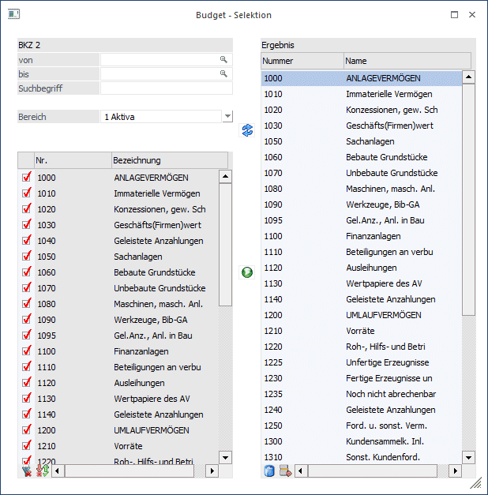
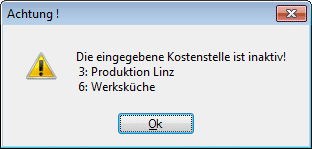
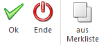
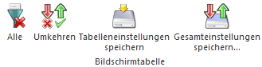
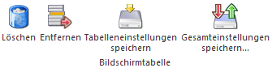

In der über den Button aufgerufenen Selektionsmaske, kann eine einzelne Selektion der Stammdaten ausgewählt werden.

Auf der linken Seite dieser Maske werden die Stammdatensätze
ausgewählt, die zum Budget hinzugehören sollen. Die Suche nach bestimmten
Stammdatensätzen erfolgt entweder über den Matchcode oder über einen
Suchbegriff.
Werden inaktive Stammdaten selektiert, kommt eine entsprechende Meldung:

Buttons

Ø OK
Ihre Selektion wird übernommen.
Ø Ende
Das Fenster schließt sich und ihre Selektion geht verloren.
Ø Aus Merkliste
Führt eine Selektion anhand einer vorher bereits gespeicherten Auswahl durch.
Tabellenbuttons "Stammdaten"

Ø Alle
Über diesen Button werden entweder alle oder keine Einträge ausgewählt.
Ø Umkehren
Dieser Button kehrt die aktuelle Selektion um.
Ø Tabelleneinstellungen speichern
Die Spalten einer Tabelle können grundsätzlich an beliebige Positionen verschoben, bzw. in der Breite entsprechend angepasst werden. Durch Anwahl des Buttons "Tabelleneinstellungen speichern" werden die Einstellungen benutzerspezifisch gespeichert und bei dem nächsten Aufruf des Programmpunktes wieder vorgeschlagen.
Ø Gesamteinstellungen speichern
Im Gegensatz zu "Tabelleneinstellungen speichern" können mit "Gesamteinstellungen speichern" mehrere Tabellenaufbauten gespeichert und nach Wunsch geladen werden. Zusätzlich werden Sonderfunktionen der Tabelle (z.B. "Spalte gruppieren") ebenfalls bei der Speicherung bedacht.
Tabellenbuttons "Ergebnis"

Ø Löschen
Über den Löschen-Button wird die gesamte Ergebnisliste gelöscht.
Ø Entfernen
Sollen einzelne nur Datensätze aus der Ergebnisliste entfernt werden, wird die Zeile markiert und mittels Entfernen-Button rausgenommen.
Ø Tabelleneinstellungen speichern
Die Spalten einer Tabelle können grundsätzlich an beliebige Positionen verschoben, bzw. in der Breite entsprechend angepasst werden. Durch Anwahl des Buttons "Tabelleneinstellungen speichern" werden die Einstellungen benutzerspezifisch gespeichert und bei dem nächsten Aufruf des Programmpunktes wieder vorgeschlagen.
Ø Gesamteinstellungen speichern
Im Gegensatz zu "Tabelleneinstellungen speichern" können mit "Gesamteinstellungen speichern" mehrere Tabellenaufbauten gespeichert und nach Wunsch geladen werden. Zusätzlich werden Sonderfunktionen der Tabelle (z.B. "Spalte gruppieren") ebenfalls bei der Speicherung bedacht.
Fensterbuttons
Ø
Über den Anzeigen-Button werden die Datensätze aufgelistet.
Ø
Alle ausgewählten Datensätze können dann mittels der Ergebnisliste der rechten Seite hinzugefügt werden.